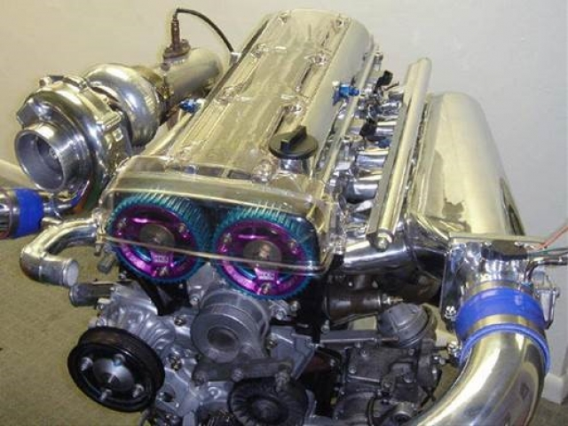
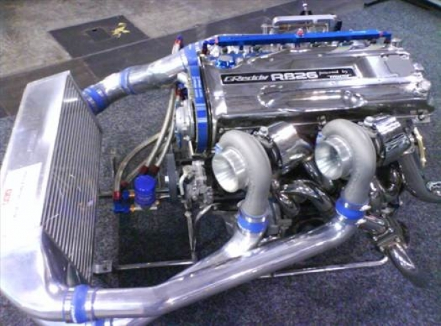
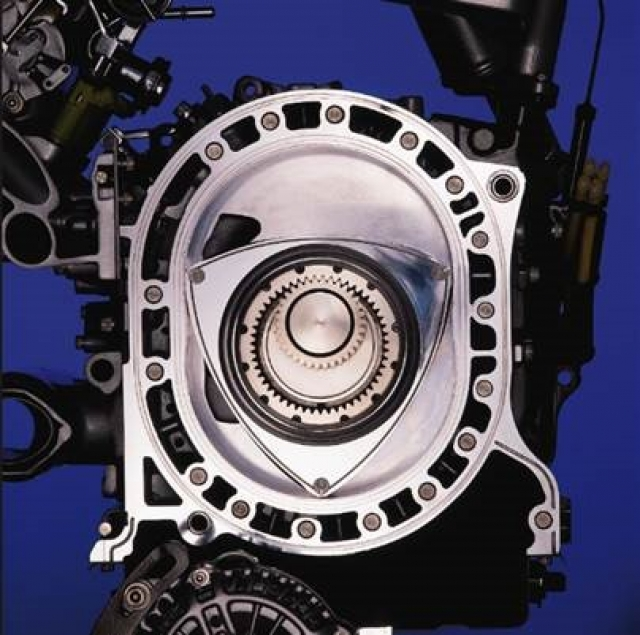
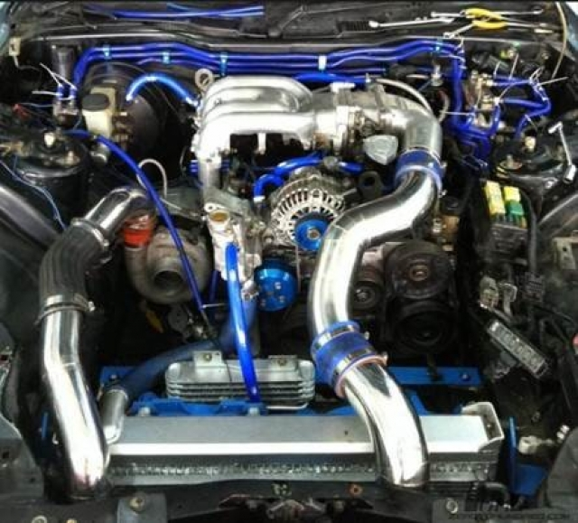
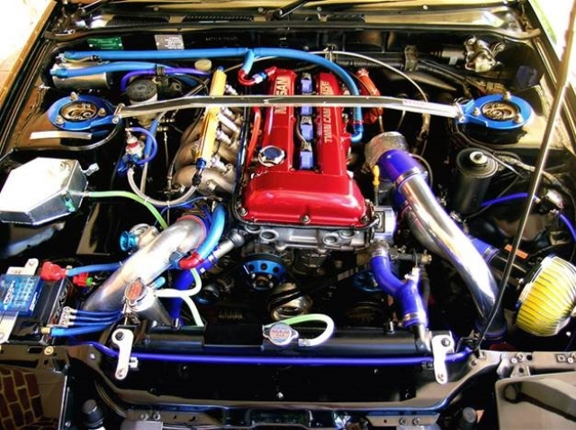
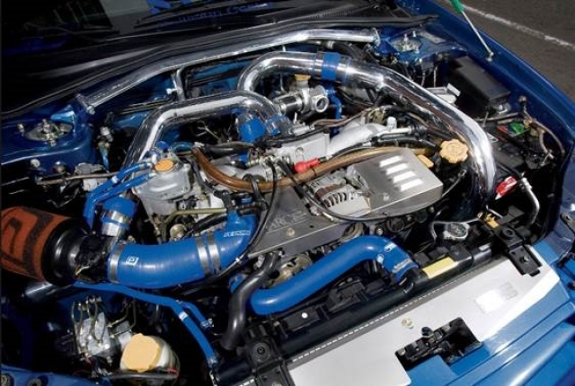
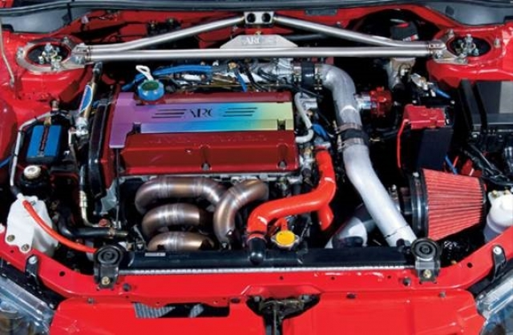

5 легенд инженерной мысли
1) 2JZ-GTE  Один из самых популярных японских моторов который производился с 1991 по 2002 год (на картинке выше). Данный мотор был специально разработан для Toyota Supra RZ в противовес нисановским ДВС. Данная рядная шестёрка обладает двойным турбо наддувом, объёмом в 3.0 литра и 451 Н/м крутящего момента. Славятся большим ресурсом и запасом прочности. Блок двигателя изготовлен из чугуна, голова блока из алюминия, поэтому в стоке он может выдержать придельную нагрузку до 1000 л.с. без внутреннего вмешательства. По праву его можно назвать самым популярным и доступным японским двигателем для тюнинга (особенно среди дрифтеров).
2) RB26DET  6-ти цилиндровый, рядный 2.6 литровый двигатель производства компании Nissan. Выпускался с 1985 по 2004 год. Был предназначен для установки на Nissan Skyline GT-R. В стоке мощность достегала 330-350 л.с. и 392 Н/м крутящего момента, хотя в тех характеристиках машина были заявлены всего 280 л.с.)) – это было связано с договоренностью производителей, которые согласовали не превышать данный порог мощности. Этот двигатель широко известен своими характеристиками и крайне высоким потенциалом для тюнинга так как имеет два турбо нагнетателя. Может выдержать 600 л.с. без модификации внутренностей ДВС.
3) 13B-REW   Можно считать по истине инновационным решением в машиностроении. Данный двигатель серийно выпускается только на Mazda RX-8, ранее устанавливался на предыдущей модели RX-7.Японским инженерам удалось с 1 литра рабочего объёма снять 190 л.с. мощности. Максимальный объём ДВС составлял всего в 1.3 литра и оснащавшийся двумя турбинами, стоящими друг за другом. Первая турбина начинает работать на малых оборотах (примерно с 1800 об/мин), чтобы на них не возникала «турбояма». Вторая турбина включается в работу с 4000 об/мин. что позволяло в любой момент получить максимальный крутящий момент, который может выдать мотор. Одним из главных преимуществ данного мотора является низкий центр тяжести и равномерное распределение веса по осям автомобиля. Имеет большой потенциал для улучшений, но в то же время считается очень капризным и частично не надежным.
4) SR20DET  Двигатель SR20DET производился с 1991 по 2002 годы и имел несколько различных вариантов в разные годы выпуска и для разных моделей Ниссан. Рядный четырехцилиндровый двигатель объёмом в 2.0 литра с установленной турбирой выдает скромные 245 л.с., но при этом «крутится» выходит на максимальную мощность и крутящий момент с небывалой скоростью. Любимый мотор начинающих японских и европейских дрифтеров)) Низкий уровень степени сжатия «8.5» в цилиндрах дал возможность без проблем увеличить буст турбо нагнетателя до 1 бара без особого вмешательства в сам ДВС, что позволило использовать бюджетный мотор с отличными техническими характеристиками для разного рода задач. Самым удачным автомобилем с данным двигателем можно по праву считать Nissan Silvia S15
5) EJ20 vs 4G63T   Два извечных конкурента в мировом раллийном чемпионате, особенно в начале 2000-х. Конкуренция Mitsubishi и Subaru позволило довести свои моторы до совершенства.Легендарные моторы данной серии устанавливались на Mitsubishi Lancer Evolution с первого по девятое поколение. С завода имел 2.0 объем мощность в 343 л.с. (при бусте в 0.8 бар) и 382 Н/м крутящего момента с турбонаддувом и механизмом газораспределения DOHC. В данных моторах идеально совмещены технологии и простота конструкции. В наше время автомобили Evolution с данным мотором являются иконой в раллийном спорте так как испытаны в жестких условиях. «привезли» много наград компании Mitsubishi за многие десятки лет в данном автомобильном спорте. Четырехтактный, четырехцилиндровый оппозитный двигатель с горизонтальным расположением цилиндров из-за своей конструкции и низкому центу тяжести позволил придать автомобили в который непосредственно устанавливался четкость и отзывчивость в управлении. Объём данного ДВС составляет 2.0 литра и обладает 225 л.с. В кругах автомобилистов был наименован как «ЁЖ», зарекомендовал себя, как производительный и надежный мотор, а его тюнинговый потенциал даже выше, чем у 2.5- литрового EJ25, прежде всего, за счет более толстых стенок цилиндров. Так же стоит добавить, что все моторы для самых "горячих" версий Subaru именнуются аббревиатурой WRX STI, оснащались коваными поршнями. Не предвзято можно заметить, что в раллийных чемпионатах машины с «ёжиком» завоевали даже больше наград и призовых мест чем 4G63T.